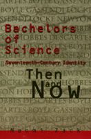

A revolutionary look at the intellectual and social mileu within which early modern philosophers invented scientific identities
A revolutionary look at the intellectual and social mileu within which early modern philosophers invented scientific identities


 A revolutionary look at the intellectual and social mileu within which early modern philosophers invented scientific identities
A revolutionary look at the intellectual and social mileu within which early modern philosophers invented scientific identities

|  |
Bachelors of ScienceSeventeenth Century Identity, Then and NowNaomi Zackpaper EAN: 978-1-56639-436-9 (ISBN: 1-56639-436-8) |
Naomi Zack begins this extraordinary book with the premise that if one is to understand Western conceptions of racialized and gendered identity, one needs to go back to a period when such categories were not salient and examine how notions of identity in the seventeenth century were fundamentally different from subsequent constructions. The seventeenth century is the last time, for example, that Europeans had any contact with non-Europeans without racializing them. From the eighteenth century onward, race becomes a central category for Europeans in their transactions with a different world, and gender undergoes radical transformation.
Zack takes the reader through a lucid tour of the lives, times, and writings of such key "bachelors of Science" as Bacon, Descartes, Newton, and Gassendi. The book situates these empiricist philosophers and their canonical reputations within the larger framework of the de facto "masculinization of science" and "scientizing of masculinity" in the seventeenth century, arguing for a more nuanced understanding of these key thinkers of the period.
Other fascinating issues examined in this book include pre-racial conceptions of slavery, witchcraft trials and their connection to homosociality, and the highly sexualized nature of women's identity in the seventeenth century. Zack points out the link between elite bachelorhood, the profession of philosophy, and scientific pursuit as recreational activity. This book is a must for understanding the historical and philosophical precedents of modern scientific identity, race, and gender.
Preface
Acknowledgments
Introduction: Philosophy, History, and Criticism
Part I: The Intellectual Context of the New Science
1. Feminist Criticism
2. Descartes' Doubt and Pyrrhonic Skepticism
3. The Via Media and English Empiricism
Part II: The New Identities
4. Bachelors in Life
5. Locke's Forensic Self
6. Propriety and Civic Identity
7. Protestant Difference and Toleration
8. The Royal Society
9. Hypotheses non Fingo
Part III: The Unidentified
10. Abuses and Uses of Children
11. Wifemen and Feminists
12. Slavery without Race
13. Witches and Magi
14. The Wealth of Nature
Afterword: Where Do We Go from There?
Notes
Select Bibliography
Index
 | Naomi Zack is Assistant Professor of Philosophy at State University New York at Albany and the author of Race and Mixed Race (Temple). |
Philosophy and Ethics
Women's Studies
Themes in the History of Philosophy, edited by Edith Wyschogrod.
Themes in the History of Philosophy, edited by Edith Wyschogrod, will serve as a collection of outstanding work in the history of philosophy. It will include interpretations of significant themes, problems, and tendencies in the history of thought; studies of important thinkers, schools, and movements; and inquiries into the relation of previous philosophies to literature, art, and history.
© 2015 Temple University. All Rights Reserved. This page: http://www.temple.edu/tempress/titles/1191_reg.html.